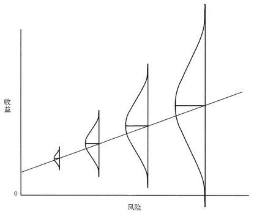
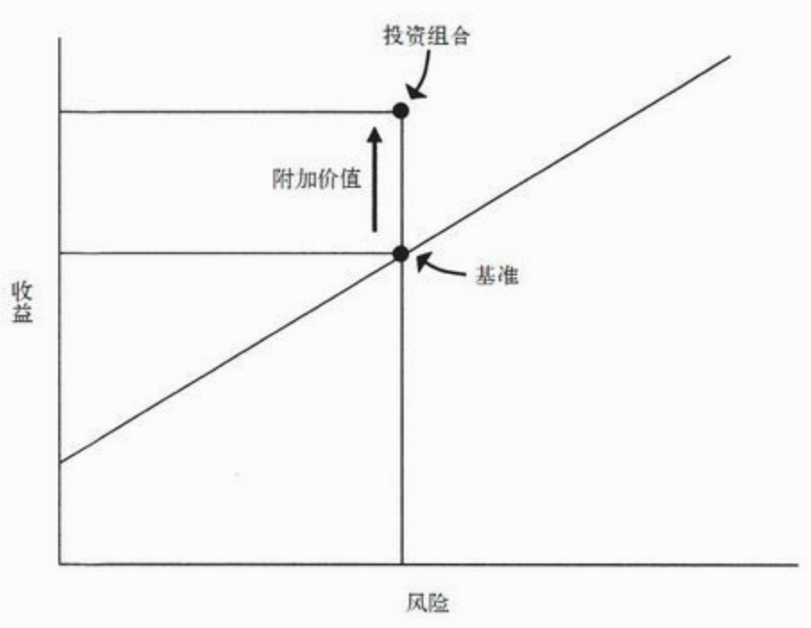
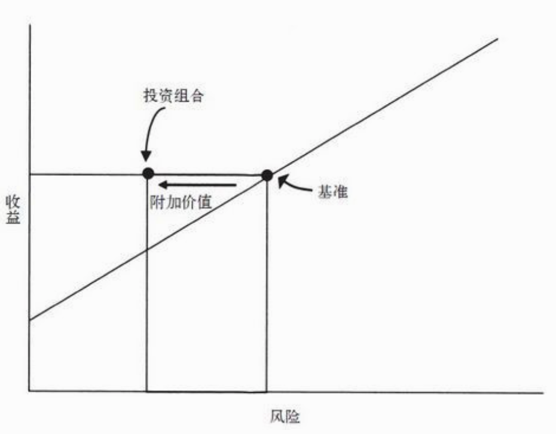

如何战胜市场？
- 正确思考 + 独立思考
- 稳妥的思考框架 + 情绪的控制
新手入门
巴菲特建议投资初学者最好的学习方法是模仿大师：“在大师门下学习几个小时的效果，远远胜过我自己过去10年里自以为是的天真思考。”
“降龙十八掌”秘籍”
1.最重要的不是盲目相信股市总是有效或者总是无效，而是清醒认识股市相当高效而且相当难以击败，只有真正的高手才能长期战胜市场。
2.最重要的投资决策不是以价格为本，而是以价值为本。
3.最重要的不是买好的，而是买得好。
4.最重要的不是波动性风险，而是永久损失的可能性风险。
5.最重要的巨大风险不在人人恐惧时，而在人人都觉得风险很小时。
6.最重要的不是追求高风险高收益，而是追求低风险高收益。
7.最重要的不是趋势，而是周期。
8.最重要的不是市场心理钟摆的中点，而是终点的反转。
9.最重要的不是顺势而为，而是逆势而为。
10.最重要的不是想到逆向投资，而是做到逆向投资。
11.最重要的不是价格也不是价值，而是相对的性价比，即安全边际。
12.最重要的不是主动寻找机会，而是耐心等待机会上门。
13.最重要的不是预测未来，而是认识到未来无法预测但可以先作好准备。
14.最重要的不是关注未来，而是关注现在。
15.最重要的是认识到短期业绩靠运气，而长期业绩靠技术。
16.最重要的不是进攻，而是防守。
17.最重要的不是追求伟大成功，而是避免重大错误。
18.最重要的不是牛市跑赢市场，而是熊市跑赢市场。
第二层次思维
投资目标应该是超越市场的平均水平，因此必须有与众不同高人一筹的思维：
- 思考深一层
- 有心有行动坚持自己深一层的行为
如何做？
- 提高洞察力
- 必须偏离常态
“每场游戏中都有一条鱼。如果你玩了45分钟还没弄清谁是鱼，那么就是你了。”
思考：
在成千上万投资者时刻准备着抬高任何过于低廉的价格时，为什么还有可能存在便宜货？
如果相对于风险来说收益显得很高，有没有可能你忽略了某些隐性风险？
为什么资产卖家愿以能让你获得超额回报的价格卖出资产？
你是否真的比资产卖家知道得更多？
如果这是一笔杰出的交易，为什么其他人不一哄而上？
准确估计价值
“抛开动量投资者和他们的占卜板以及所有无关理智分析的投资形式不谈，还有另外两种受基本面驱动的投资方法：价值投资和成长型投资。简而言之，价值投资者的目标是得出证券当前的内在价值，并在价格低于当前价值时买进，成长型投资者的目标则是寻找未来将迅速增值的证券”
“过于超前与犯错是很难区分的”
“估价正确却不坚定地持有，用处不大。估价错误却坚定地持有，后果更糟。这句话表明恰到好处是多么困难。”
“某种东西价格上涨时，人们的喜爱程度本应下降，但在投资中，他们的喜爱程度往往会加深。”
“股票背后的利好可能是真的，但是如果你买进的价格过高，那么仍然会损失。”
“利好—以及似乎人人都享有的丰厚利润—最终会让那些起初抵制的人投降并买进。”
“当最后一个人坚持不住变成买家的时候，股票或市场就到“顶”了。到顶时间往往与基本面的发展无关。”
“价格过高”和“下一步将下跌”完全是两个意思。证券可能会价格过高并且维持相当长的一段时间……甚至进一步上涨。
“无论如何，价值最终会发挥作用。”
价格与价值的关系
考虑基本面价值是毫无疑问的，不过大多数情况下，证券的价格至少还受到其他两个重要因素的影响：心理和技术（也是价格短期波动的主要决定因素）。
“再没有比在崩盘期间从不顾价格必须卖出的人手中买进更好的事了”
“基本面价值只是决定证券价格的因素之一，你还要设法让心理和技术为你所用。”
泡沫时期
在泡沫时期，对市场势头的迷恋取代了价值和公平价格的观念，贪婪（加上在其他人似乎大发横财时旁观的痛苦）抵消了所有本应占据主导地位的智慧。
总而言之，我相信从真实价值出发的投资方法是最可靠的。相比之下，指望价值以外的东西获利（比如靠泡沫获利）可能是最不可靠的方法。
理解风险

“多数风险都具有主观性、隐蔽性和不可量化性”
“如果对未来有一定的认识，我们就能判断出哪些结果最可能发生、哪些结果有可能发生，以及可能结果的分布范围，继而得出“预期结果”。预期结果由每个结果的发生概率加权而来，它能表明许多未来可能发生的情况—但并非全部。”
“普遍相信没有风险本身就是最大的风险，因为只有当投资者适当规避风险时，预期收益中才会包含风险溢价。”
“认为风险已经消失的看法是最危险的风险源头之一，也是促成泡沫的主要因素。在市场的钟摆达到最高点时，认为风险很低以及投资一定能获利的信念令人群激动不已，以致他们丧失了对损失应有的警惕、担忧及恐惧，只对错失机会的风险耿耿于怀。”
“当投资者的行为改变市场时，风险就加大了。”
“广泛的否定意见可以将风险最小化，因为价格里所有的乐观因素都被消除了。”
“人人都相信某种东西没有风险的时候，价格通常会被哄抬至蕴涵巨大风险的地步。”
“狂热的公众意见不仅是潜在低收益的源泉，还是高风险的源泉。”


优秀的投资者获得的收益可能不比别人高，但在实现同等收益的前提下承担了较低风险（或以相当低的风险实现了稍低于其他人的收益）。当然，在市场平稳或上涨时，我们无从得知投资组合的风险有多大。这就是沃伦·巴菲特所观察到的，除非潮水退去，否则我们无从分辨游泳者谁穿着衣服，谁又在裸泳。
万物皆有周期
认为周期性已经结束的信念所体现的思维方式，基于一个危险的前提—“这次是不同的”。
“无视周期并推算趋势是投资者所做的最危险的事情之一。”
“当你面对一个以“周期已经中断”为基础而建立的交易时，记住，它永远是一个失败的赌注。”
钟摆意识
“投资者心理显示，他们花在端点上的时间似乎远比花在中点上的时间多。”
“贪婪与恐惧的循环是对待风险的态度改变所致。”
“当形势大好、价格高企时，投资者迫不及待地买进，把所有谨慎忘在脑后。随后，当四周一片混乱、资产廉价待沽时，他们又完全丧失了承担风险的意愿，迫不及待地卖出。”
牛市有三个阶段：
第一阶段，少数有远见的人开始相信一切会更好。
第二阶段，大多数投资者意识到进步的确已经发生。
第三阶段，人人断言一切永远会更好。
“与钟摆类似，投资者心理朝向某个极端的摆动，最终会成为促进反方向回摆的力量。有时，积聚的能量本身就是回摆的原因—也就是说，钟摆朝向端点摆动时，会受到自身重力的修正。”
为什么会产生错误？
- 贪婪
- 恐惧
- 自欺
- 从众
- 嫉妒
- 自负
如何提高胜算
对内在价值有坚定的认识。
当价格偏离价值时，坚持做该做的事。
足够了解以往的周期—先从阅读和与经验丰富的投资者交谈开始，之后通过经验积累—从而了解市场过度膨胀或过度萎缩最终得到的是惩罚而不是奖励。
透彻理解市场对极端市场投资过程的潜在影响。
一定要记住，当事情看起来“好到不像真的”时，它们通常不是真的。
当市场错误估价的程度越来越深（始终如此）以致自己貌似错误的时候，愿意承受这样的结果。
与志趣相投的朋友或同事相互支持。
逆向投资
一旦市场达到极端，它最终会摆回（或超过）中点。认为市场会沿着同一方向永远摆动或者到达端点时便停留在那里的投资者必定会失望。
逆向投资本身会变得过于热门，从而有可能会被误以为是群体行为。
你必须保证自己在进行逆向投资的时候，不仅知道它们与大众的做法相反，还知道大众错在哪里。
最优秀的投资者身上都体现出怀疑态度。怀疑和悲观并不同义。在过度乐观时，怀疑倡导悲观；但在过度悲观时，怀疑又会倡导乐观。
寻找便宜货
第一，潜在投资的清单；(将可能的投资范围缩小到风险可接受的限度内)
第二，对它们的内在价值的估计；(买得好 –> 价格相对于价值较低)
第三，对其价格相对于内在价值的感知；(受欢迎程度的变化 )
第四，对每种投资涉及到的风险及其对在建投资组合的影响的了解。